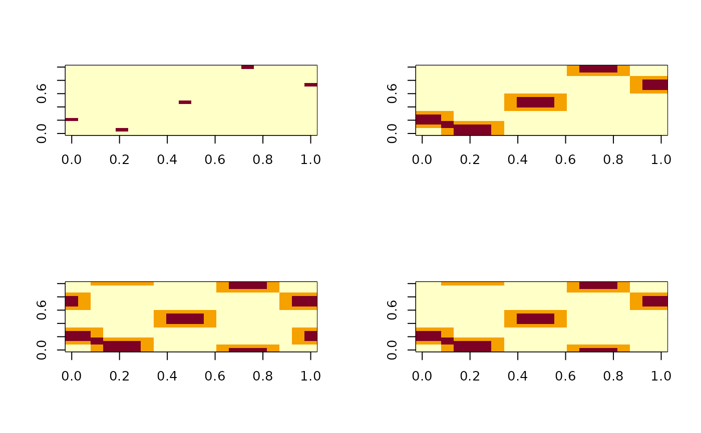
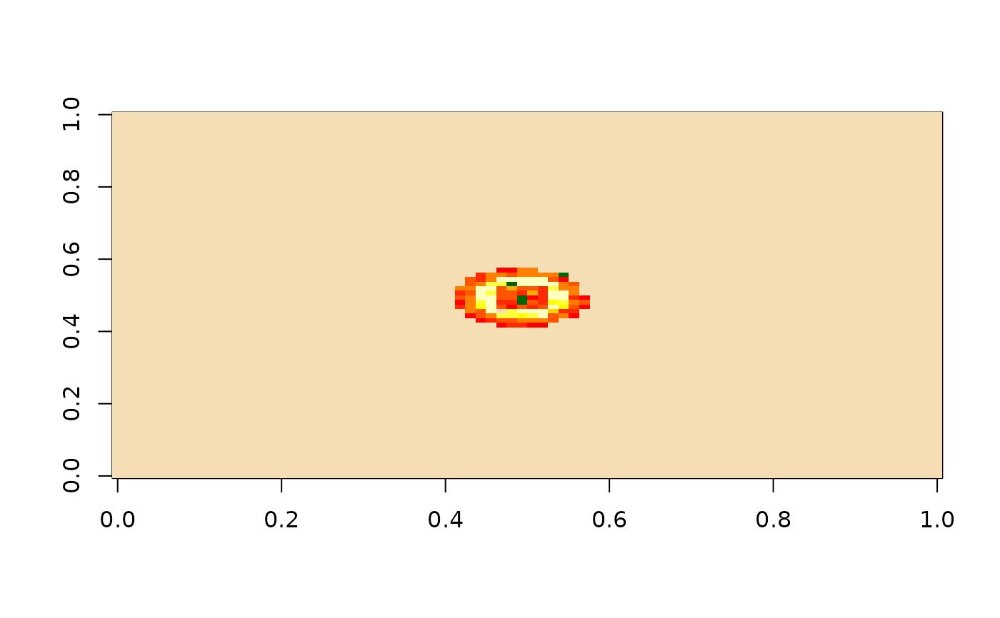

Count Number of Neighbours on a Rectangular Grid
neighbours.RdThis is the base function for the simulation of deterministic and stochastic cellular automata on rectangular grids.
Usage
neighbours(x, state = NULL, wdist = NULL, tol = 1e-4, bounds = 0)
neighbors(x, state = NULL, wdist = NULL, tol = 1e-4, bounds = 0)Arguments
- x
Matrix. The cellular grid, in which each cell can have a specific state value, e.g. zero (dead cell) or one (living cell) or the age of an individual.
- state
A value whose occurrence is counted within the neighbourhood of each cell. If
state = NULL(the default), all non-zero cells are counted, i.e. the grid is treated as binary.- wdist
The neighbourhood weight matrix. It has to be a square matrix with an odd number of rows and columns. If
wdist = NULL(the default), a 3 by 3 matrix of ones with a zero centre is used, which counts the eight direct (Moore) neighbours.- tol
Tolerance value for the comparison of
statewith the state of each cell. A cell is counted if its state differs fromstateby less thantol. Iftolis a large value, then more than one state can be checked simultaneously.- bounds
A vector specifying the type of boundaries, where 0 means open boundaries and 1 torus-like (periodic) boundaries. Either one or four values can be given; a single value is applied to all four edges, four values are given in the order bottom, left, top, right. Shorter vectors are recycled to length four.
Details
The performance of the function depends on the size of the matrices and the
type of the boundaries, where open boundaries are faster than torus-like
boundaries. Function eightneighbours is even faster.
With open boundaries, cells beyond the grid edge are treated as absent and
do not contribute to the weighted sum. With torus-like boundaries, the grid
wraps around, so that the opposite edge becomes the neighbour. Individual
edges can be set independently, e.g. bounds = c(0, 1, 0, 1) connects
the left and right edges only, forming a cylinder.
Value
A matrix with the same structure as x containing, for each cell, the
weighted sum (using wdist) of the neighbouring cells whose state
differs from state by less than tol. If the central element of
wdist is non-zero, the focal cell contributes to its own sum.
Examples
## ==================================================================
## Demonstration of the neighbourhood function alone
## ==================================================================
## weight matrix for neighbourhood determination
wdist <- matrix(c(0.5,0.5,0.5,0.5,0.5,
0.5,1.0,1.0,1.0,0.5,
0.5,1.0,1.0,1.0,0.5,
0.5,1.0,1.0,1.0,0.5,
0.5,0.5,0.5,0.5,0.5), nrow=5)
## state matrix
n <- 20; m <- 20
x <- matrix(rep(0, m * n), nrow = n)
## set state of some cells to 1
x[10, 10] <- 1
x[1, 5] <- 1
x[n, 15] <- 1
x[5, 2] <- 1
x[15, m] <- 1
#x[n, 1] <- 1 # corner
opar <- par(mfrow = c(2, 2))
## start population
image(x)
## open boundaries
image(matrix(neighbours(x, wdist = wdist, bounds = 0), nrow = n))
## torus (donut like)
image(matrix(neighbours(x, wdist = wdist, bounds = 1), nrow = n))
## cylinder (left and right boundaries connected)
image(matrix(neighbours(x, wdist = wdist, bounds = c(0, 1, 0, 1)), nrow = n))

par(opar) # reset graphics area
## ==================================================================
## The following example demonstrates a "plain implementation" of a
## stochastic cellular automaton i.e. without the simecol structure.
##
## A simecol implementation of this can be found in
## the example directory of this package (file: stoch_ca.R).
## ==================================================================
mycolors <- function(n) {
col <- c("wheat", "darkgreen")
if (n>2) col <- c(col, heat.colors(n - 2))
col
}
pj <- 0.99 # survival probability of juveniles
pa <- 0.99 # survival probability of adults
ps <- 0.1 # survival probability of senescent
ci <- 1.0 # "seeding constant"
adult <- 5 # age of adolescence
old <- 10 # age of senescence
## Define a start population
n <- 80
m <- 80
x <- rep(0, m*n)
## stochastic seed
## x[round(runif(20,1,m*n))] <- adult
dim(x)<- c(n, m)
## rectangangular seed in the middle
x[38:42, 38:42] <- 5
## plot the start population
image(x, col = mycolors(2))
## -----------------------------------------------------------------------------
## Simulation loop (hint: increase loop count)
## -----------------------------------------------------------------------------
for (i in 1:10){
## rule 1: reproduction
## 1.1 which cells are adult? (only adults can generate)
ad <- ifelse(x >= adult & x < old, x, 0)
## 1.2 how much (weighted) adult neighbours has each cell?
nb <- neighbours(ad, wdist = wdist)
## 1.3 a proportion of the seeds develops juveniles
## simplified version, you can also use probabilities
genprob <- nb * runif(nb) * ci
xgen <- ifelse(x == 0 & genprob >= 1, 1, 0)
## rule 2: growth and survival of juveniles
xsurvj <- ifelse(x >= 1 & x < adult & runif(x) <= pj, x+1, 0)
## rule 2: growth and survival of adults
xsurva <- ifelse(x >= adult & x < old & runif(x) <= pa, x+1, 0)
## rule 2: growth and survival of senescent
xsurvs <- ifelse(x >= old & runif(x) <= ps, x+1, 0)
## make resulting grid of complete population
x <- xgen + xsurvj + xsurva + xsurvs
## plot resulting grid
image(x, col = mycolors(max(x) + 1), add = TRUE)
if (max(x) == 0) stop("extinction", call. = FALSE)
}

## modifications: pa<-pj<-0.9
## additional statistics of population structure
## with table, hist, mean, sd, ...